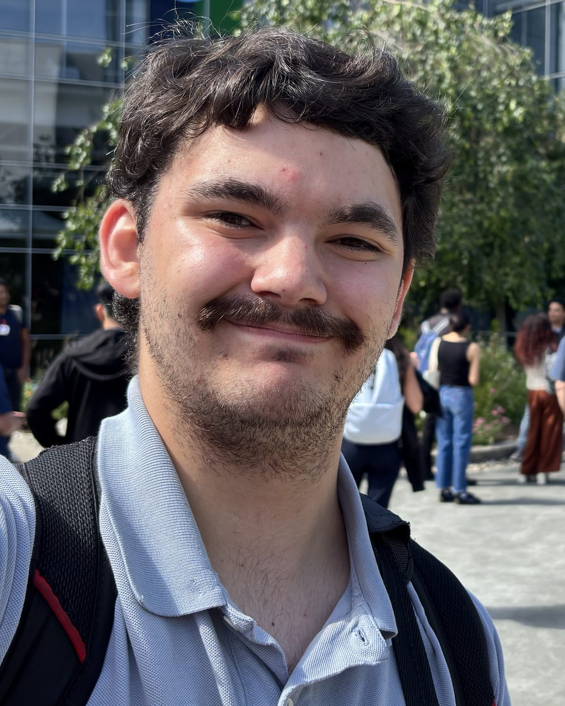

Moments worth keeping
Fresno sports, wedding & portrait photographer

About
About Me
Hi, I'm Christian, a Fresno-based freelance photographer dedicated to capturing life's most dynamic and meaningful moments. Whether I'm shooting fast-paced youth sports, the quiet intimacy of a wedding, vibrant local events, or wildlife out in nature, I bring a sharp eye and a storytelling approach to every frame. Working primarily with professional Canon equipment, my focus is always on delivering high-quality, authentic images that preserve your favorite memories long after the moment has passed.
Portfolio
Portfolio
Sports
Football and water polo: game action and the moments around it. Tap any photo to view it larger.


Portfolio
Weddings
The couple, the rings, and the moments in between. Tap any photo to view it larger.


Portfolio
Portraits
Seniors, couples, families, and the occasional four-legged friend. Tap any photo to view it larger.